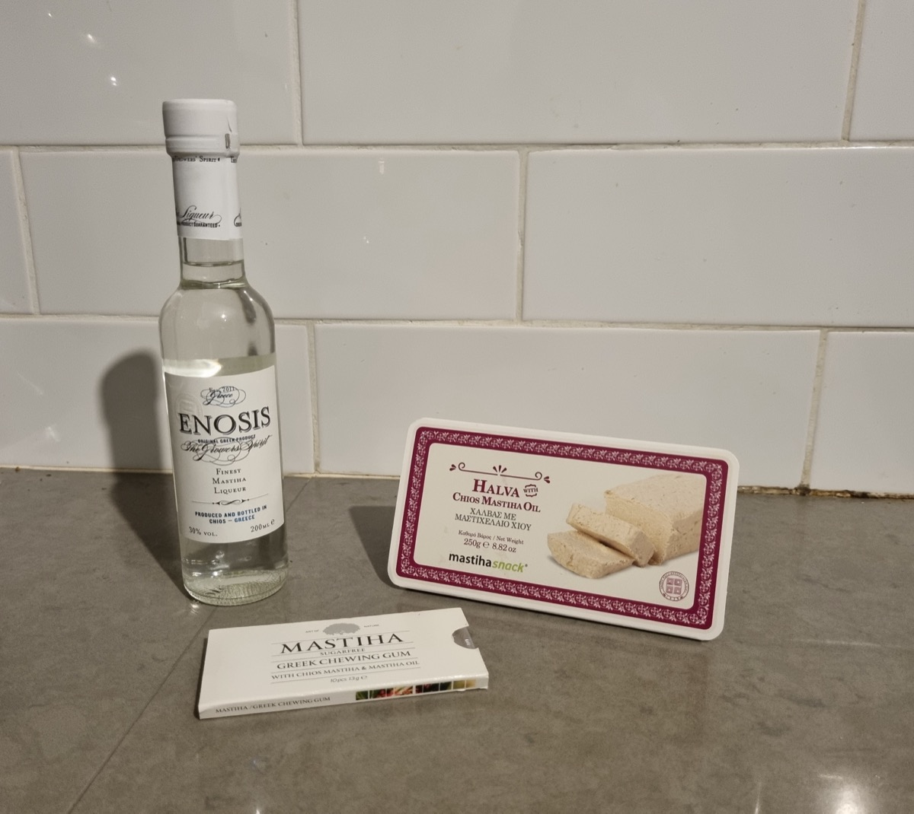

Sakız Adası mutfağı, hem deniz ürünleri hem de adaya özgü sakız (mastic) bazlı tatlarla dikkat çekiyor. Burada yediğiniz hiçbir şey başka bir yerde aynı lezzette olmayacak.
Mastiha Likörü

Sakız ağacının reçinesinden elde edilen mastiha, hafif ve ferahlatıcı bir içkiye dönüştürülüyor. Yemek sonrası sindirim kolaylaştırıcı olarak servis edilen bu likör, adaya özgü en önemli lezzetlerden biri.
Sakız Aromalı Tatlılar
Dondurma, lokum ve hatta kahve bile sakız aromasıyla hazırlanabiliyor. "Submarino" adı verilen, bardaktaki suya batırılan sakız macunu şekeri mutlaka denenmeli — bu lezzeti başka hiçbir yerde bulamazsınız.
Pitta Maniatiki
Yöresel bir tür börek. Peynir ve aromatik otlarla hazırlanan bu hamur işi, adanın dağ köylerindeki fırınlarda yapılıyor. Kahvaltılık ya da atıştırmalık olarak mükemmel.
Taze Balık ve Ahtapot
Liman kenarındaki tavernalarda, günün yakalanan balığı ızgara ya da fırında servis ediliyor. Ahtapot ise taverna balkonlarında güneşte kurutulduktan sonra kor ateşte pişiriliyor — Ege'nin klasik sofrası.
Yerel şarap ve zeytinyağı da adanın küçük ölçekli üreticilerinden çıkan, mutlaka tadılması gereken otantik lezzetler arasında.
Nereden Satın Alınır?
Mastiha ürünleri için Chora'nın pazar sokağındaki dükkânlar ve Mastihashop mağazaları en güvenilir adres. Paketlenmiş mastiha reçinesi, kozmetik ürünler ve likör her yaştan hediye alıcısına hitap eder.